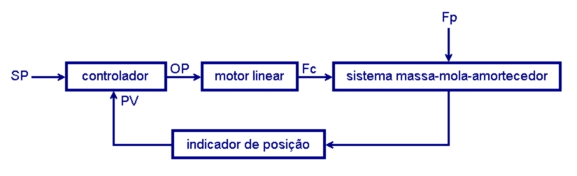

SIMULADOR DIDÁTICO DE CONTROLE EM MALHA FECHADA
Mk-1 v.2024.02
Sistema Massa-Mola-Amortecedor
Renato Markele Ferreira Cândido / Claudio Cesar Bezerra Teles
--- USO GRATUITO ---
Esse simulador pode ser acessado em https://proanuncio.com.br/sc
As grandezas simuladas são expressas em unidades do Sistema Internacional (SI).
Nos valores numéricos emprega-se o ponto decimal em vez de vírgula.
O processo controlado é um sistema de segunda ordem do tipo massa-mola-amortecedor sem atrito com o ar. O(A) utilizador(a) pode inserir os parâmetros do processo, ou seja, massa m, coeficiente de amortecimento c e constante da mola Ks. Os valores de c e Ks podem ser negativos. Embora a animação mostre um carro dotado de rodas, a simulação assume que a massa flutua sobre o solo.
A variável de processo (controlada) PV(t) é a posição do eixo vertical da massa, medida em metros por um indicador de posição oculto. A faixa de indicação vai de PVmin a PVmax. O(A) utilizador(a) pode alterar esses limites (em metros) e inserir um valor de erro na indicação de posição por meio da caixa de inserção localizada no canto inferior direito da tela. O processo é sujeito à força perturbadora Fp(t). A variável manipulada é a força de controle Fc(t) que o elemento final de controle (motor linear) exerce no processo. O modelo da simulação presume que todas as forças estão contidas no eixo horizontal da massa.
O controlador tem as seguintes características:
- Recebe o setpoint SP(t) e a variável controlada PV(t);
- Calcula o erro e(t) = SP(t) - PV(t);
- Fornece a saída (output) OP(t);
- Permite que o(a) utilizador(a):
- Selecione o modo de controle (PID, PID Anti-windup ou Biestável);
- Ajuste diretamente a força de controle Fc(t) quando no modo MANUAL; e
- Selecione Ação Direta (DIR) ou Ação Reversa.
O diagrama de blocos abaixo mostra a interação entre processo, controle e ambiente simulados.

A estrutura PID básica empregada pelo simulador é definida por meio da seguinte
equação:
OP(t) = Kp ·e(t) + Ki · ∫ e(t)dt + Kd
· ė(t) + OPo.
Sendo Ki = Kp/Ti e Kd = KpTd.
Ganhos Kp, Ki e Kd, constantes Ti e Td, saída OP(t) e pré-carga OPo são adimensionais. SP(t), PV(t), e(t) e banda proporcional BP (= 1/Kp) também são adimensionais mas são expressos em metros por conveniência. O(A) utilizador(a) pode inserir Kp, Ki, Kd, OPo e SP(t) e observar as demais variáveis. OP(t) pode variar entre -100% e 100%.
O desenho abaixo mostra as equações básicas do simulador. M(t) representa a curva de resposta do motor linear. Fcmax é a máxima magnitude que a força de controle Fc(t) pode alcançar.

Essa versão disponibiliza quatro modos de controle em malha fechada:
- Modo PID;
- Modo Anti-windup PD + I se |e| < eLim;
- Modo Anti-windup PD + I se |D| < DLim; e
- Modo Biestável.
Ao selecionar o modo "PID" o(a) utilizador(a) poderá:
- Ajustar Imax para limitar a magnitude da componente integral a um valor inferior a 100%;
- Fazer a derivada ser calculada sobre a PV(t) em vez de sobre o erro e(t);
- Ajustar a frequência de corte (em Hz) do filtro passa-baixa existente na saída do cálculo da componente derivativa; e
- Contornar o filtro passa-baixa.
Ao escolher o modo "PD + I se |e| < eLim" o(a) utilizador(a) pode alterar a magnitude do limiar de erro eLim (em metros) que aciona o integrador. O perfil dessa condição tem formato de degrau.
Ao escolher o modo "PD + I se |D| < DLim" o(a) utilizador(a) pode entrar com o valor do módulo do limiar de derivada DLim (em %) que liga o integrador. O perfil dessa condição tem formato de rampa.
Ao selecionar o modo "Biestável" o(a) utilizador(a) pode inserir o valor da banda morta (em metros) e os valores mínimo e máximo de OP(t).
O(A) utilizador(a) pode ligar ou desligar as seguintes exibições na tela:
- Animação;
- Limites do envelope de operação - linhas sólidas/tracejadas em vermelho;
- PV(t) - linha tracejada em verde-azulado escuro;
- Faixa de indicação da PV(t) - em laranja;
- SP(t) - linha tracejada em azul; e
- Banda Proporcional BP - em verde.
O motor linear recebe o comando OP(t) e o converte em força Fc(t) de acordo com a curva M(t) de resposta do motor, que pode ser ideal ou não-ideal. O valor de Fc(t) é limitado a variar entre -Fcmax e Fcmax. O(A) utilizador(a) pode inserir o valor de Fcmax (em newtons) e selecionar o tipo de curva do motor. Se escolher curva não-ideal, o(a) utilizador(a) pode inserir a inclinação central da curva (sigmóide) e respectiva folga (em %). O(A) utilizador(a) pode inserir o tempo morto do motor (em ms) e selecionar Ação Direta (DIR) ou Ação Reversa.
Ao ser ligado, o controlador ativa um mostrador que, de acordo com a opção selecionada no respectivo menu, exibe OP(t) ou Fc(t). Ao selecionar a exibição de Fc(t), o(a) utilizador(a) pode ver no mostrador o formato da curva M(t) de resposta do motor.
O setpoint SP(t) pode ser constante ou variável. Há diversos tipos de SP(t) disponíveis. O(A) utilizador(a) pode selecionar uma opção e ajustar os limites SPmin e SPmax (em metros).
A perturbação Fp(t) pode ser constante ou variável. Há diversas alternativas de Fp(t) disponíveis. O(A) utilizador(a) pode escolher um tipo e inserir os limites Fpmin e Fpmax, que são expressos em percentuais de Fcmax.
Estão disponíveis os seguintes cenários pré-configurados:
- Cenário Demonstração,
- Espaço Sideral (ES),
- Equilíbrio Indiferente (EInd),
- Oscilador Ideal (OI),
- Processo Subamortecido (PSub),
- Processo com Amortecimento Crítico (PCrit),
- Processo Superamortecido (PSuper),
- Pêndulo Invertido (PInv),
- PInv: Transição Rápida - A e B,
- PCrit: "Suspensão Ativa",
- PCrit: "Suspensão Ativa (2)",
- PCrit: Comparação Biestável/Proporcional,
- PSub: Diversas Variações,
- PSuper: Comparação Anti-windup,
- EInd: Elemento Final de Controle com Folga e
- PSub: Questão NRC P319.
Por intermédio do menu situado no canto superior direito da tela o(a) utilizador(a) pode escolher um cenário. Por meio das diversas caixas de inserção da tela e dos respectivos cursores deslizantes o(a) utilizador(a) pode alterar as características do cenário selecionado.
Quanto mais a frame rate média (em FPS) do computador do(a) utilizador(a) se aproximar da esperada, mais a simulação se aproximará de tempo real (ver indicadores exibidos no canto inferior esquerdo da tela).
Comentários podem ser encaminhados aos seguintes endereços: claudioteles12@gmail.com e renatomarkele@hotmail.com. Por favor escreva SIMULADOR no assunto de sua mensagem para permitir distinção de spam.
Gratos!